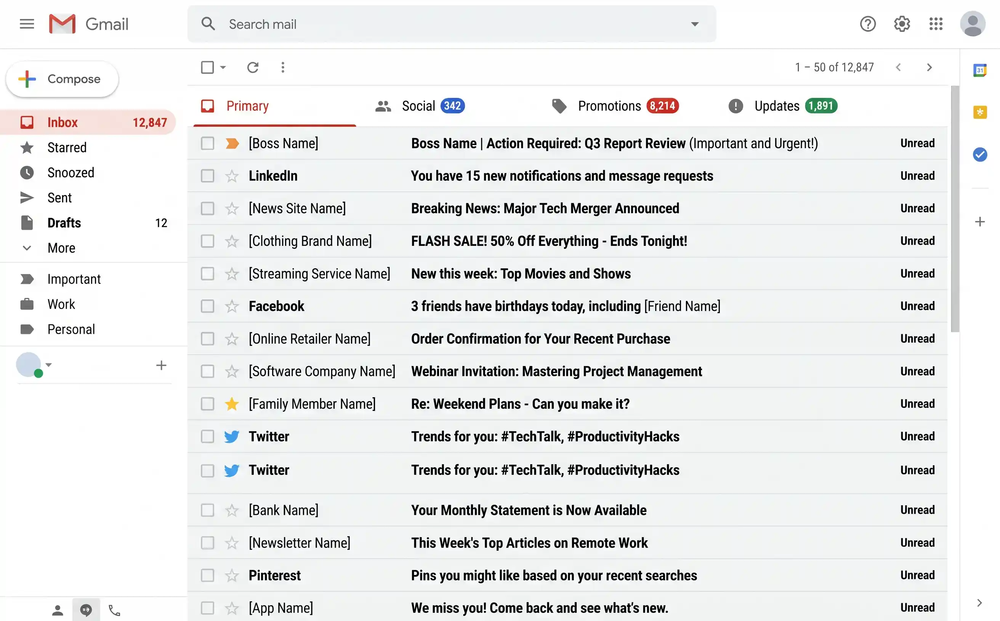
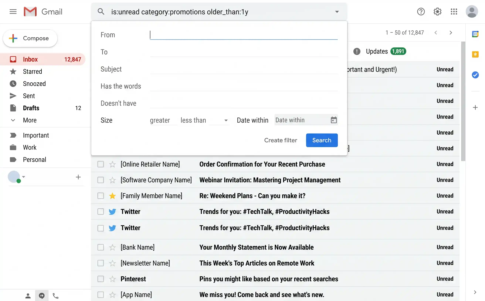
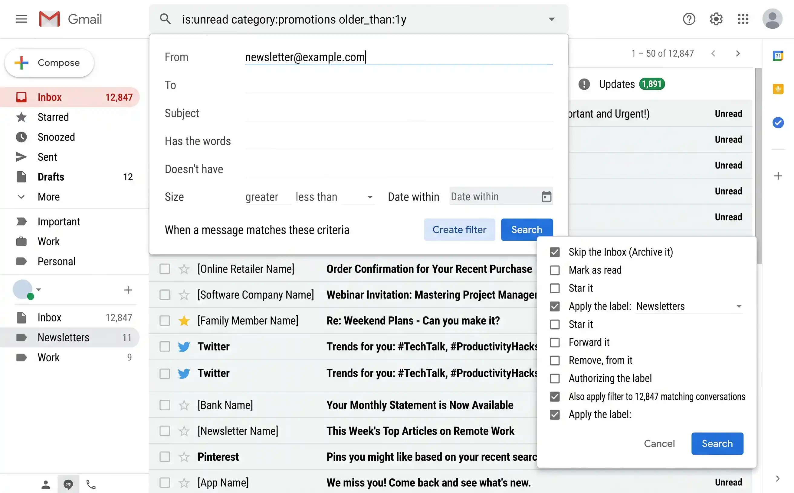
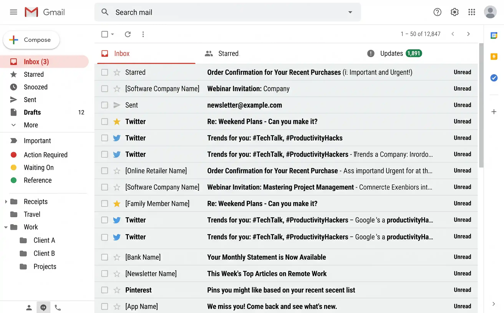

Why your Gmail inbox is out of control
Gmail gives you 15 GB of free storage — more than enough that most people never feel the need to delete anything. And so they don't. Promotional emails pile up by the hundreds. Newsletters from that one blog you read once in 2019 keep arriving weekly. Social notifications from LinkedIn, Facebook, and Twitter generate dozens of messages a day. Automated receipts, shipping updates, and password resets accumulate silently in the background.
The result: the average Gmail user has somewhere between 5,000 and 50,000 emails they will never read again, and an unread count so large it has become meaningless. The inbox stops being a tool for communication and becomes a source of low-level anxiety — a wall of noise you scroll past to find the one message that actually matters.
The good news: Gmail has powerful built-in search operators, filters, and organisational tools that most people never use. With 30 minutes of focused effort, you can go from inbox chaos to inbox zero — and set up systems that keep it that way.

A typical cluttered Gmail inbox — thousands of unread emails, most of which are promotions, newsletters, and notifications you'll never open.
Step 1 — Archive the backlog in one move
The fastest way to a clean inbox is not to delete everything — it's to archive everything. Archiving removes emails from your inbox view but keeps them fully searchable and accessible. Nothing is lost. You're simply telling Gmail: "I've seen this, move it out of my way."
The trick is to archive everything older than a date you choose — say, anything before the start of this year. This clears thousands of emails from your inbox in about 60 seconds.
How to archive all old inbox emails
-
1
Type this search query in Gmail
In the Gmail search bar, type:
in:inbox before:2025/01/01. This finds every email in your inbox received before 1 January 2025. Adjust the date to suit you — some people preferbefore:2026/01/01to archive everything up to the start of this year. -
2
Select all matching emails
Click the checkbox in the top-left corner to select all emails on the page. Then look for the yellow banner that says "Select all conversations that match this search" — click it. This selects every single matching email, not just the ones visible on screen.
-
3
Click the Archive button
Click the Archive icon (the box with a downward arrow) in the toolbar. Gmail will confirm you want to archive all selected conversations. Click OK. Depending on how many emails you have, this may take a few seconds to a couple of minutes.
Archived emails aren't deleted — they're simply removed from your inbox view. They still appear in All Mail, they still show up in search results, and any labels you've applied still work. Think of the Archive as "filing" an email. You can always find it again by searching.
Step 2 — Mass-delete promotional and newsletter emails
Archiving clears the inbox view, but it doesn't free up storage or remove the actual clutter. For that, you need to delete the emails you genuinely don't need — and the biggest category by far is promotional emails and old newsletters. Gmail's search operators let you target these precisely and delete them in bulk.
Bulk-delete by category
Use these searches one at a time. For each one: run the search, select all, click "Select all conversations that match this search," then click Delete (the bin icon).
category:promotions older_than:6m— promotional emails older than 6 months. These are shop sales, marketing blasts, and app notifications. Safe to delete en masse.category:social older_than:6m— social media notifications (LinkedIn, Facebook, Twitter, Instagram). If you didn't act on them within a week, you never will.category:updates older_than:1y— automated updates (shipping confirmations, app notifications, service alerts) older than a year.unsubscribe older_than:3m— catches newsletters and mailing lists by looking for the word "unsubscribe" in the email body. Very effective at surfacing bulk mail that Gmail didn't categorise.

Gmail search operators let you target specific categories and date ranges — the key to bulk cleanup without accidentally deleting important mail.
The most useful Gmail search operators
These are the search operators worth knowing. You can combine them — for example, from:linkedin.com older_than:1y or has:attachment larger:10M.
| Operator | What it does | Example |
|---|---|---|
is:unread |
Finds all unread emails | is:unread older_than:1y |
is:read |
Finds all read emails | is:read category:promotions |
has:attachment |
Emails with attachments | has:attachment older_than:2y |
larger:5M |
Emails larger than 5 MB | larger:10M for big attachments |
older_than:1y |
Emails older than 1 year | older_than:6m, older_than:3m |
before:2024/01/01 |
Emails before a specific date | after:2024/01/01 before:2024/07/01 |
category:promotions |
Gmail's Promotions tab | category:social, category:updates |
from: |
Emails from a specific sender | from:noreply@example.com |
to: |
Emails sent to an address | to:me |
subject: |
Words in the subject line | subject:invoice |
in:inbox |
Only inbox emails | in:trash, in:spam |
label: |
Emails with a specific label | -label:important (without a label) |
unsubscribe |
Finds newsletters (they contain "unsubscribe" in the body) | unsubscribe older_than:6m |
Deleted emails go to Gmail's Bin (Trash) and stay there for 30 days before being permanently removed. If you're cleaning up to free storage space, go to the Bin and click "Empty Bin now" to reclaim that space immediately.
Step 3 — Unsubscribe from the worst offenders
Deleting old promotional emails is treating the symptom. The cure is stopping them from arriving in the first place. You don't need to unsubscribe from everything — focus on the top 10–15 senders by volume. These repeat offenders account for roughly 80% of the noise in most inboxes.
Find your worst offenders
-
1
Search for "unsubscribe"
Type
unsubscribein the Gmail search bar. This surfaces virtually every newsletter and marketing email in your account, since they all contain an unsubscribe link by law. -
2
Scan for repeat senders
Scroll through the results and notice which senders appear most frequently. You'll quickly spot the usual suspects — e-commerce shops, social media platforms, SaaS products you signed up for once, and marketing newsletters.
-
3
Use Gmail's built-in Unsubscribe link
Open an email from a repeat sender. Gmail often shows an Unsubscribe link right next to the sender's name at the top of the email. Click it. Gmail handles the unsubscription process automatically — you don't even need to visit the sender's website in most cases.
-
4
Repeat for your top 10–15 senders
This takes about 10 minutes and eliminates the vast majority of incoming noise. You'll notice the difference within days.
Services like Unroll.me, Clean Email, and similar tools promise to mass-unsubscribe you from newsletters. The catch: they require full access to your Gmail account to work, and some have been caught selling anonymised email data. Gmail's own Unsubscribe button does the same job without giving a third party access to your inbox.
Step 4 — Set up filters to automate the future
Filters are Gmail's most underused feature. A filter watches for incoming emails that match criteria you define and automatically takes an action — archive it, label it, star it, or delete it — without you ever seeing it in your inbox. Once set up, a filter runs silently in the background forever.
You don't need dozens of filters. Three well-chosen ones can transform your inbox experience.
Filter 1: Newsletters you want to keep but not see
Some newsletters are genuinely worth reading — but not the moment they arrive. Create a filter that archives them with a label so you can read them when you choose.
-
1
Click the search options icon
In the Gmail search bar, click the small slider icon on the right side to open the advanced search panel.
-
2
Enter the sender's address in the "From" field
Type the sender's email address — for example,
newsletter@example.com. You can also use a partial match like@substack.comto catch all Substack newsletters at once. -
3
Click "Create filter"
At the bottom of the search panel, click Create filter.
-
4
Set the filter actions
Tick Skip the Inbox (Archive it) and Apply the label — choose or create a label like "Newsletters." Optionally tick Also apply filter to matching conversations to retroactively label old emails from this sender.
Filter 2: Receipts and order confirmations
Receipts are useful for reference but don't need to clutter your inbox. Create a filter with these criteria:
- Has the words:
receipt OR invoice OR "order confirmation" OR "payment received" - Actions: Skip the Inbox, Apply label "Receipts", Never send to Spam
Filter 3: Social media notifications
If you still receive email notifications from social platforms but don't want to fully unsubscribe (some people like having a searchable record), filter them:
- From:
@linkedin.com OR @facebookmail.com OR @twitter.com OR notification@ - Actions: Skip the Inbox, Apply label "Social", Mark as read

Gmail's filter creation dialog — tick "Skip the Inbox" and "Apply the label" to automatically sort incoming emails without lifting a finger.
Open any email, click the three-dot menu (⋮) in the top right, and select Filter messages like these. Gmail pre-fills the sender's address, and you can adjust from there. This is the fastest way to create a filter when you spot a repeat offender.
Step 5 — Organise with a simple label system
Gmail labels are more powerful than folders because a single email can have multiple labels. But this flexibility is also a trap — it's tempting to create dozens of hyper-specific labels that become impossible to maintain. Resist that urge. A system of 5–7 labels is all most people need.
A recommended label system
| Label | Colour | Purpose |
|---|---|---|
| Action Required | Red | Emails you need to do something about — reply, complete a task, make a decision |
| Waiting On | Yellow | Emails where you're waiting for someone else to respond or act |
| Reference | Green | Useful information you might need later — instructions, credentials, documentation |
| Receipts | Grey | Purchase confirmations, invoices, payment receipts (auto-populated by your filter) |
| Travel | Blue | Booking confirmations, itineraries, boarding passes |
| Newsletters | Purple | Newsletters worth reading — browse when you have time (auto-populated by your filter) |
Creating labels in Gmail
In the left sidebar, scroll down and click Create new label. Name it, then right-click the label to assign it a colour. You can also create nested labels (sub-labels) for more granular sorting — for example, Receipts / Amazon or Work / Project X — but start simple and only add nesting if you find you need it.

A clean, colour-coded label system in Gmail's sidebar. Six labels is all you need — resist the urge to over-categorise.
Unlike folders in Outlook, a Gmail label doesn't move an email anywhere — it adds a tag. One email can carry multiple labels simultaneously. A receipt from a hotel booking, for example, could have both "Receipts" and "Travel" labels. This makes Gmail's system more flexible than traditional folders, but only if you keep the number of labels manageable.
Quick wins — ranked by effort vs. reward
| Action | Time needed | Impact |
|---|---|---|
| Archive all old inbox emails | 3 min | Thousands of emails cleared from inbox |
Delete old promotions (category:promotions older_than:6m) | 3 min | 2,000–10,000 emails deleted |
| Delete old social notifications | 2 min | 1,000–5,000 emails deleted |
| Unsubscribe from top 10 senders | 10 min | Stops 80% of incoming noise |
| Empty Gmail Bin | 1 min | Frees storage immediately |
| Set up 3 basic filters | 10 min | Automates future sorting permanently |
| Create a label system | 5 min | Lasting organisation for important emails |
Keeping your inbox clean
A one-time cleanup is satisfying, but without a few simple habits the clutter will rebuild within months. The goal isn't to obsessively manage your email — it's to spend less time on it by preventing the mess from returning.
- Weekly 5-minute sweep. Once a week, scan your inbox and archive anything older than two weeks that you haven't acted on. If it was important, it would have been dealt with by now. If someone needs a reply, they'll follow up.
- Unsubscribe instantly. The moment you see a newsletter or promotional email you don't read, unsubscribe right then. Don't archive it — don't delete it — unsubscribe. It takes 5 seconds and prevents dozens of future emails.
- Use "Send and Archive." When you reply to an email, click Send and Archive (the button with the send icon plus a down arrow) instead of just Send. This removes the conversation from your inbox the moment you've dealt with it. Enable it in Settings → General → Send and Archive.
- Enable auto-advance. By default, after you archive or delete an email, Gmail dumps you back to the inbox list. That breaks your flow. Go to Settings → Advanced → Auto-advance and enable it — now Gmail automatically shows you the next email, letting you process your inbox like a queue.
Sunday evening or Monday morning: archive old inbox emails (1 min), unsubscribe from anything you didn't read this week (2 min), check if any filters need adjusting (1 min). Under 5 minutes a week to keep your inbox permanently under control.